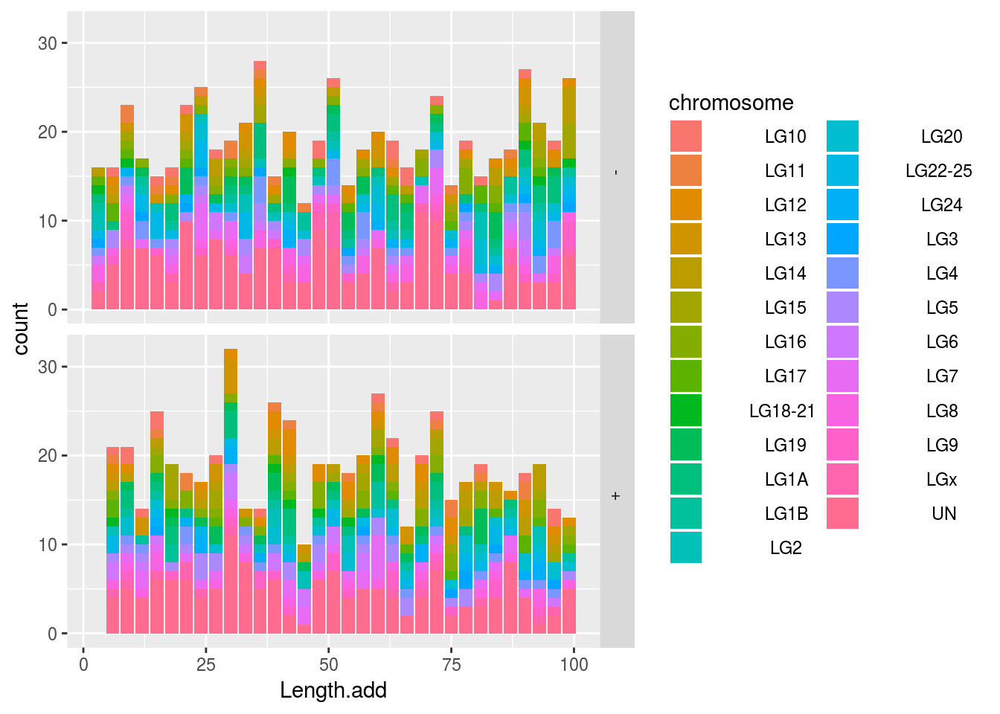
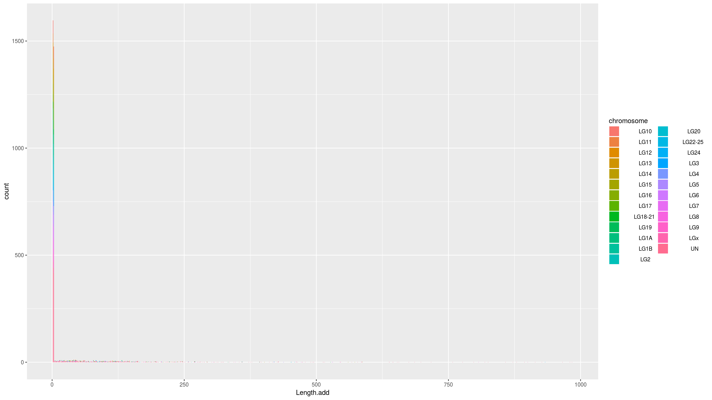
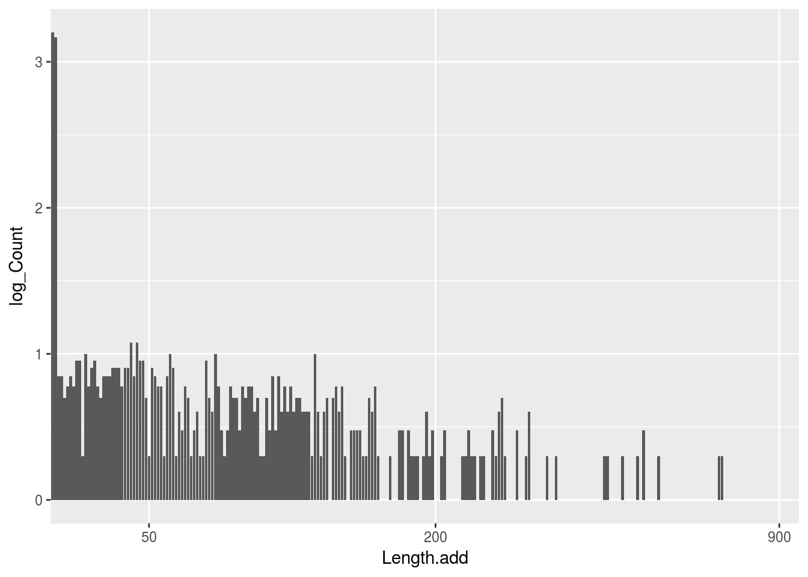
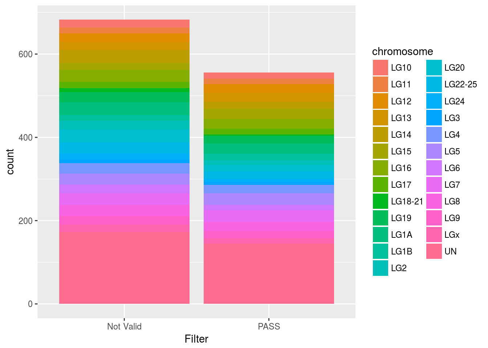
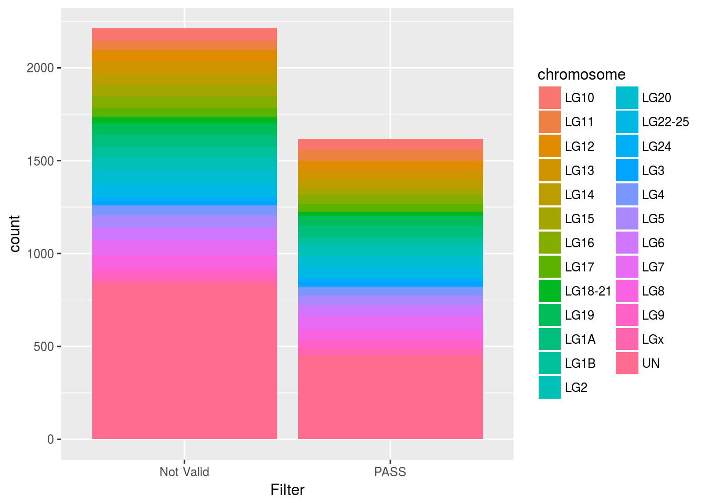

Les données de NoStart et NoStop ont été obtenues à l’aide d’un script Python maison. Ce script récupère, à partir des erreurs warnings donnés par le logiciel snpEff, les différents gènes qui n’ont pas de codon start et/ou de codon stop. Puis il réalise une recherche de motif (codon start ou codon stop) à jusqu’à 100bp en amont d’un gène et jusqu’à 1000bp en aval du gène. En parallèle, il note tout cela au sein de deux fichiers au format texte. Il est donc nécessaire d’importer et d’ouvrir ces fichiers pour pouvoir examiner les longueurs ajoutées aux gènes pour qu’ils aient un codon start et codon stop.
Le fichier NoStart regroupe 1239 observations de 8 variables. Le fichier NoStop, quant à lui, regroupe 3830 observations de 8 variables.
Les observations (lignes du tableau) représentent le nombre de codons Start ou Stop qui ont été cherchés et trouvés par le script Python. Les variables (colonnes du tableau) représentent différentes choses : le chromosome (Groupe de liaison : LG), la position des anciens codons start ou stop, la nouvelle position des codons start ou stop, la longueur qui a été ajoutée ainsi que le brin sur lequel se situe le gène.
Tableau présentant le nombre de codon start (ATG) trouvés
## summary(NoStart_Data$codon)
## ATG 1239Tableau présentant le nombre de codon stop (TAA, TGA, TAG) trouvés
## summary(NoStop_Data$codon)
## TAA 1295
## TAG 772
## TGA 1763Tableau présentant le nombre de codon start ou stop trouvés par chromosome
## summary(NoStart_Data$chromosome)
## LG10 34
## LG11 27
## LG12 42
## LG13 41
## LG14 48
## LG15 41
## LG16 52
## LG17 29
## LG18-21 13
## LG19 43
## LG1A 54
## LG1B 30
## LG2 32
## LG20 47
## LG22-25 43
## LG24 23
## LG3 16
## LG4 45
## LG5 54
## LG6 34
## LG7 56
## LG8 49
## LG9 38
## LGx 30
## UN 318
## summary(NoStop_Data$chromosome)
## LG10 127
## LG11 106
## LG12 110
## LG13 118
## LG14 118
## LG15 89
## LG16 110
## LG17 90
## LG18-21 61
## LG19 112
## LG1A 134
## LG1B 92
## LG2 127
## LG20 130
## LG22-25 126
## LG24 47
## LG3 52
## LG4 103
## LG5 118
## LG6 121
## LG7 153
## LG8 137
## LG9 91
## LGx 71
## UN 1287Tableau présentant le nombre de codon start ou stop trouvés par brin (+ ou -)
## summary(NoStart_Data$brin) summary(NoStop_Data$brin)
## - 634 1949
## + 605 1881Représentation des longueurs ajoutées pour les codons start. L’axe des abscisses représente la longueur ajoutée en pb en fonction du brin. L’axe des ordonnées représente le nombre d’occurence de la longueur ajoutée en fonction du brin. Les couleurs permettent de visualiser la répartition des différentes longueurs ajoutées au sein des chromosomes (une couleur par chromosome).

Représentation des longueurs ajoutées pour les codons stop. L’axe des abscisses représente la longueur ajoutée en pb. L’axe des ordonnées représente le nombre d’occurence de la longueur ajoutée. Les couleurs permettent de visualiser la répartition des différentes longueurs ajoutées au sein des chromosomes (une couleur par chromosome).

Remarque : Ce graphique ne peut être transformé en log car il existe des valeurs (Count) égales à 0. Or log(0) n’existe pas et ne peut donc pas être “dessiné” sur le graphique. Le graphique ci-dessous est en log mais on perd l’information des chromosomes.
Voici un extrait du Tableau présentant le nombre d’occurrence (Count) en fonction de la longueur ajoutée (Length.add).
## Length.add Count
## 1 2 1596
## 2 3 1474
## 3 5 7
## 4 6 7
## 5 8 5
## 6 9 6Représentation des longueurs ajoutées pour les codons stop. L’axe des abscisses représente la longueur ajoutée en pb. L’axe des ordonnées représente le log du nombre d’occurence de la longueur ajoutée. 
Les données de NoStart et NoStop testées ont été obtenues à l’aide d’un script Python maison. Ce script récupère, à partir des deux fichiers au format texte, les coordonnées des nouveaux CDS et les compare aux coordonnées des CDS du transcriptome de D. labrax. Ce script rajoute un “filtre” (PASS ou Not valid) en fonction du résultat du test (comparaison). Si les nouvelles coordonnées sont comprises “dans” les coordonnées du transcriptome alors le “filtre” écrit est PASS, sinon il écrit Not valid. Il est donc nécessaire d’importer et d’ouvrir ces fichiers pour pouvoir examiner les filtres appliqués pour chaque longueur ajoutée précédement.
“Si tu veux utiliser ce texte pour ton rapport, il faudrait que tu explicites plus ce que tu veux dire par”et les compare aux coordonnées des CDS du transcriptome de D. labrax“. En fait, il faut que tu précises que des nouvelles données de séquençage de transcrits, plus complètes que celles utilisées lors de l’annotation initiale du transcriptome, ont été utilisées pour assembler un nouveau transcriptome. Et c’est au coordonnées de ces nouveaux transcrits que tu confrontes les modifications d’annotations que tu proposes. Il faut aussi savoir que ce test n’est que relatif car il est tout à fait possible que certains transcrits n’aient pas encore été séquencés jusqu’au bout ou soient carrément absents du séquençage. En effet l’expression de certains gènes est soit spécifique du tissu ou du stade de développement et on ne les a pas trouvé dans ce qu’on a séquencé. Ce contrôle par la taille n’est donc valable que pour une partie des corrections que tu as effectuées. Le test le plus complet mais aussi probablement le plus long est celui qui sera fait par une traduction des nouveau CDS obtenus.” - Erick
Le fichier NoStart testé regroupe 1239 observations de 6 variables. Le fichier NoStop testé, quant à lui, regroupe 3830 observations de 6 variables.
Les observations (lignes du tableau) représentent le nombre de codons Start ou Stop qui ont été testés par le script Python. Les variables (colonnes du tableau) représentent différentes choses : le chromosome (Groupe de liaison : LG), les coordonnées du CDS du transcriptome, les nouvelles coordonnées du CDS ainsi que le “filtre” qui a été ajouté.
Représentation des “filtres” pour les codons start. L’axe des abscisses représente les filtres. L’axe des ordonnées représente le nombre d’occurence de chaque “filtre”. Les couleurs permettent de visualiser la répartition des différents “filtres” au sein des chromosomes (une couleur par chromosome). 
Tableau présentant le nombre d’occurrence (Count) en fonction du filtre (Filter) pour les NoStop testés.
## Filter Count
## 1 Not Valid 683
## 2 PASS 556Représentation des “filtres” pour les codons stop. L’axe des abscisses représente les filtres. L’axe des ordonnées représente le nombre d’occurence de chaque “filtre”. Les couleurs permettent de visualiser la répartition des différents “filtres” au sein des chromosomes (une couleur par chromosome). 
Tableau présentant le nombre d’occurrence (Count) en fonction du filtre (Filter) pour les NoStart testés.
## Filter Count
## 1 Not Valid 2213
## 2 PASS 1617Copyright © 2018 | Elise GUERET